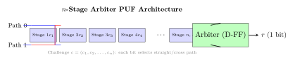
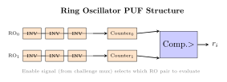

Chapter 3: Physically Unclonable Functions (PUF)¶
3.1 Introduction¶
A Physically Unclonable Function (PUF) is a hardware security primitive that exploits manufacturing process variations inherent in semiconductor fabrication to create a unique, device-specific mapping from input challenges to output responses. PUFs serve as a hardware fingerprint – even two chips manufactured from identical masks will produce different responses due to nanoscale variations in transistor threshold voltages, wire widths, and oxide thicknesses.
Key properties of an ideal PUF:
-
Uniqueness: Two different PUF instances produce distinct responses to the same challenge
-
Reproducibility (Reliability): Same instance, same challenge produces the same response across temperature/voltage variations
-
Unclonability: No physical device can reproduce the PUF response profile, even the manufacturer
-
Unpredictability: Responses appear random; responses to unseen challenges are unpredictable
-
One-wayness: Cannot derive PUF physical parameters from observed challenge-response pairs (CRPs)
Note: PUFs are classified as Strong PUFs (exponential CRP space, e.g., Arbiter PUF with \(2^n\) challenges) or Weak PUFs (limited CRP space, e.g., SRAM PUF with one challenge per memory cell). Strong PUFs enable authentication protocols; Weak PUFs are used for key generation.
3.2 Arbiter PUF¶
3.2.1 Operating Principle¶
An Arbiter PUF uses a race condition between two signal paths to generate a 1-bit response. An \(n\)-stage arbiter PUF provides a challenge space of \(2^n\) distinct challenges.

Each switch stage either passes signals straight or crosses them based on challenge bit \(c_i\). The arbiter samples which path arrives first, producing 1-bit response \(r\).
3.2.2 Additive Delay Model¶
The additive delay model represents path timing difference as linear in challenge parity products:
where \(\mathbf{w} \in \mathbb{R}^{n+1}\) is the delay weight vector and \(\Phi(c)\) is the \((n+1)\)-dimensional feature vector. The response is \(r = \text{sgn}(\Delta)\). This linear separability makes Arbiter PUFs vulnerable to logistic regression attacks.
3.3 Ring Oscillator PUF (RO-PUF)¶
3.3.1 Architecture¶
A Ring Oscillator PUF uses pairs of identically-designed ring oscillators. Due to process variations, each pair oscillates at slightly different frequencies. The PUF response bit is determined by which oscillator in a pair runs faster.

Note: FPGA implementation constraint: RO pairs must be placed in adjacent LUTs with identical routing constraints. Otherwise routing asymmetry dominates over process variation, reducing PUF uniqueness. Xilinx ISE/Vivado placement constraints: LOC and BEL directives.
3.4 SRAM PUF¶
3.4.1 Operating Principle¶
SRAM cells have a metastable state at power-up. Their initial value (0 or 1) is determined by transistor mismatch – the stronger transistor wins the race and sets the stable state. Each cell reliably powers up to its preferred value, creating a device-specific fingerprint.
-
Cell count: Typical SRAM PUF uses 8,192 cells (1,024 bytes); enrolled at device initialization
-
Reliability: 95-99% of bits are stable across -40 to +85 C and 1.8V-3.6V supply
-
Unstable bits: 1-5% of bits are near-metastable; masked out via enrollment helper data
-
Uniqueness: Hamming distance between two different devices: 50% (ideal random)
-
Key generation: SRAM startup values processed through Fuzzy Extractor to produce stable key
-
Products: NXP SE050/SE051, Intrinsic ID QuiddiKey IP core (used in Microchip SAME54)
3.5 Fuzzy Extractor¶
A Fuzzy Extractor converts a noisy PUF response into a stable cryptographic key. It consists of two algorithms:
-
Gen\((w)\): On first call (enrollment), generates key \(k\) and helper data \(P\) from PUF response \(w\)
-
Rep\((w', P)\): On subsequent calls (reconstruction), reproduces \(k\) from noisy \(w'\) using \(P\)
3.5.1 Implementation with BCH Error Correction¶
BCH codes are commonly used in fuzzy extractors for SRAM PUFs. A BCH\((n, k, t)\) code can correct up to \(t\) bit errors.
| Parameter | Value | Notes |
|---|---|---|
| SRAM PUF response size | 2,048 bits | 2K SRAM cells evaluated at power-up |
| BCH code | BCH(2047, 1024, 55) | Corrects up to 55 bit errors in 2047-bit block |
| Error rate assumption | 12% bit error rate | Conservative for -40 to +85 C, \(\pm\)10% voltage |
| Raw SRAM bits used | 2,048 bits | For one BCH block |
| Codeword bits \(n\) | 2,047 bits | BCH block length |
| Information bits \(k\) | 1,024 bits | Bits available after ECC overhead |
| Helper data | \((n-k)\) = 1,023 bits parity check bits | Public; does not leak PUF secret |
| Output key after hash | 256 bits | SHA-256(Rep output) |
| Security level | 128 bits | After accounting for helper data leakage |
3.5.2 Fuzzy Extractor Python Implementation¶
import numpy as np
import hashlib
from bchlib import BCH # pip install bchlib
class FuzzyExtractor:
def __init__(self, t=55, n=2047):
"""BCH(n, k, t) fuzzy extractor for SRAM PUF key generation"""
self.bch = BCH(t, n) # BCH with t error correction
self.n = n
def gen(self, sram_bits):
"""Enrollment: sram_bits is numpy array of 0/1 values (n bits)"""
# Truncate to BCH block size
raw = sram_bits[:self.n]
raw_bytes = np.packbits(raw).tobytes()
# Generate ECC syndrome (helper data)
data_len = self.bch.data_len
secret = raw_bytes[:data_len]
ecc = self.bch.encode(secret)
helper_data = raw_bytes[data_len:] + ecc # ECC parity bits
# Derive stable key via SHA-256
key = hashlib.sha256(secret).digest()
return key, helper_data
def rep(self, noisy_sram_bits, helper_data):
"""Reconstruction: recover key from noisy readout + helper data"""
raw = noisy_sram_bits[:self.n]
raw_bytes = np.packbits(raw).tobytes()
data_len = self.bch.data_len
# Apply ECC correction
ecc = helper_data[len(helper_data)-self.bch.ecc_bytes:]
corrected, _ = self.bch.decode(raw_bytes[:data_len], ecc)
if corrected is None:
raise ValueError('Too many bit errors -- PUF decoding failed')
key = hashlib.sha256(corrected).digest()
return key
# Simulate SRAM PUF enrollment and reconstruction
rng = np.random.default_rng(42)
sram_enrollment = rng.integers(0, 2, size=2047) # PUF startup values
fe = FuzzyExtractor(t=55, n=2047)
key, helper = fe.gen(sram_enrollment)
print(f'Enrolled key: {key.hex()}')
# Simulate noisy readout (5
flip_mask = rng.random(2047) < 0.05
sram_noisy = sram_enrollment ^ flip_mask.astype(int)
recovered_key = fe.rep(sram_noisy, helper)
print(f'Recovered key: {recovered_key.hex()}')
print(f'Keys match: {key == recovered_key}')
3.6 Machine Learning Attacks on PUFs¶
Strong PUFs (particularly Arbiter PUFs) are vulnerable to machine learning attacks. Given a set of challenge-response pairs (CRPs), an attacker can train a model to predict responses to unseen challenges with \(>99\%\) accuracy.
3.6.1 Logistic Regression Attack on Arbiter PUF¶
-
Method: Logistic Regression (Ruhrmair et al., 2010; Becker 2015)
-
Input: Challenge feature vector \(\Phi(c) \in \{-1,+1\}^{n+1}\)
-
Model: \(P(r=1|c) = \sigma(\mathbf{w}^T \Phi(c))\) where \(\sigma\) is sigmoid
-
Training data: 10,000 to 100,000 CRPs collected via physical access or side-channel
-
Accuracy: 64-bit Arbiter PUF: \(>99\%\) with \(\sim\)10,000 CRPs
-
128-bit: \(>99\%\) with \(\sim\)100,000 CRPs
-
XOR-n PUF: Requires \(10^n\) CRPs; \(n=8\) is currently at ML boundary
3.6.2 pypuf Machine Learning Attack Example¶
# pip install pypuf
import numpy as np
from pypuf.simulation import ArbiterPUF
from pypuf.attack import LRAttack2021
from pypuf.io import random_inputs
# Create a 64-bit Arbiter PUF instance (victim)
puf = ArbiterPUF(n=64, seed=0xDEADBEEF)
# Collect 20,000 challenge-response pairs (simulating physical access)
N = 20000
challenges = random_inputs(n=64, N=N, seed=42)
responses = puf.eval(challenges)
# Split into train/test
train_c, test_c = challenges[:15000], challenges[15000:]
train_r, test_r = responses[:15000], responses[15000:]
# Run LR attack
attack = LRAttack2021(
puf, train_c, train_r, k=1, # k=1 for single arbiter
transformation='id', combiner='xor'
)
model = attack.fit()
# Evaluate accuracy on unseen challenges
model_resp = model.eval(test_c)
accuracy = np.mean(model_resp == test_r)
print(f'Attack accuracy: {accuracy:.1
# Compare: 2-XOR Arbiter PUF (more resistant)
from pypuf.simulation import XORArbiterPUF
xor_puf = XORArbiterPUF(n=64, k=2, seed=0xBEEF) # 2-XOR
# Needs ~1M CRPs for k=2; ~10M for k=4
Warning: All Arbiter PUF variants (single, XOR, iPUF) have been shown vulnerable to ML attacks with sufficient CRPs. Only Weak PUFs (SRAM PUF, Flash PUF) or PUFs with CRP obfuscation (Controlled PUF) are currently considered ML-resistant for authentication applications.
3.7 PUF Hardware Implementations¶
3.7.1 FPGA Resource Utilization¶
| Device | LUTs | FFs | BRAMs | DSPs | Fmax (MHz) | Power (mW) |
|---|---|---|---|---|---|---|
| Artix-7 35T (RO-PUF 256) | 512 | 512 | 0 | 0 | 200 | 28 |
| Artix-7 35T (Arbiter 64) | 64 | 1 | 0 | 0 | 180 | 5 |
| Kintex-7 160T (SRAM PUF) | 48 | 32 | 16 | 0 | 300 | 65 |
| Kintex-UltraScale+ (RO-PUF) | 490 | 490 | 0 | 0 | 350 | 42 |
| Spartan-7 (Butterfly PUF) | 256 | 128 | 0 | 0 | 120 | 18 |
| Intel Cyclone V (Latch PUF) | 256 | 0 | 0 | 0 | 140 | 22 |
| iCE40UP5K (RO-PUF 64) | 128 | 128 | 0 | 0 | 48 | 8 |
(SRAM PUF on Kintex-7 uses 16 BRAMs as the PUF array; LUTs are for the fuzzy extractor control logic. RO-PUF resources are for the ring oscillator array and frequency counter only; BCH decoder adds approximately \(2\times\) LUTs.)
3.7.2 ASIC PUF Implementations¶
| Process | Area (mm2) | Power (mW) | Freq (MHz) | ECC | Notes |
|---|---|---|---|---|---|
| 180 nm CMOS | 0.35 | 2.8 | 50 | – | Research RO-PUF prototype |
| 130 nm CMOS | 0.22 | 1.6 | 80 | – | SRAM PUF IP (QuiddiKey) |
| 90 nm CMOS | 0.14 | 1.0 | 120 | – | Arbiter PUF academic |
| 65 nm CMOS | 0.08 | 0.6 | 200 | P-256 | SmartFusion2, ATECC608B |
| 40 nm CMOS | 0.04 | 0.3 | 350 | P-256 | NXP SE050 (28 nm, similar) |
| 28 nm FD-SOI | 0.02 | 0.2 | 500 | P-256+Ed25519 | NXP SE051, Maxim |
| 22 nm FinFET | 0.01 | 0.1 | 700 | Multi | Next-gen secure element PUF |
3.8 PUF Quality Metrics¶
| Metric | Formula | Ideal Value and Meaning |
|---|---|---|
| Uniqueness | \(\frac{2}{k(k-1)}\sum_{i=1}^{k}\sum_{j=i+1}^{k}\frac{HD(R_i,R_j)}{n}\times 100\%\) | 50%: responses from different devices are maximally different |
| Reliability | \(1 - \frac{1}{|T||C|}\sum_{t,c} HD(R_t(c), R_0(c))\) | 100%: same device/same challenge always gives same response |
| Uniformity | \(\frac{1}{n}\sum_{i=1}^n r_i \times 100\%\) | 50%: equal numbers of 0s and 1s in response |
| Bit-aliasing | \(\frac{1}{k}\sum_{j=1}^k r_{j,i} \times 100\%\) per bit \(i\) | 50%: each bit position is 1 in \(\sim\)50% of devices |
3.9 All PUF Solutions Ecosystem¶
| Solution | Type | Vendor/Source | Platform | Key Details |
|---|---|---|---|---|
| Intrinsic ID QuiddiKey | SRAM PUF IP | Intrinsic ID (Eindhoven) | ASIC/FPGA IP core | AIS-31; NIST SP 800-90B; used in NXP, ST, Microchip; key derivation + authentication |
| NXP SE050 | SRAM PUF SoC | NXP Semiconductors | 28nm CMOS ASIC | EAL6+; FIPS 140-2 L3; IoT auth; ECDSA-P256/P384; AWS Greengrass integration |
| ATECC608B | SRAM PUF | Microchip Technology | 40nm ASIC | I2C/SWI; Arduino Nano 33 IoT; Apple HomeKit; ECC-P256 key storage; $0.80 |
| Maxim DS28E83 | SRAM PUF | Maxim/Analog Devices | 28nm ASIC | 1-Wire; SHA-256 HMAC; battery pack authentication; Samsung SDI cells |
| Microsemi SmartFusion2 | SRAM PUF | Microsemi/Microchip | 65nm CMOS SoC | FPGA + ARM M3 + SRAM PUF; NIST CAVP; Military/Aerospace |
| Xilinx DNA (7-series) | Device DNA | Xilinx/AMD | 28nm FPGA | 57-bit unique ID from EFUSE; not cryptographic PUF; read via JTAG |
| Xilinx UltraScale+ PUF | SRAM PUF | Xilinx/AMD | 16nm FinFET FPGA | Built-in PUF for device authentication; used with Xilinx Security Suite |
| Terasic DE10-Standard RO-PUF | RO PUF demo | Academic | Intel Cyclone V FPGA | Reference design; 512 RO pairs; evaluation board $195 |
| pypuf | Simulation | Open Source (GitHub) | Python library | Simulate/attack Arbiter/XOR/SRAM PUFs; ML attack benchmarks; github.com/nils-wisiol/pypuf |
| OpenPUF | FPGA IP | Open Source | Xilinx/Intel FPGA | HDL for Arbiter/RO PUF; Verilog; synthesis scripts |
| CRP Database Framework | Research tool | TU Darmstadt | Software | Academic CRP collection/analysis framework for PUF evaluation |
| NIST PUF Test Suite | Evaluation tool | NIST | Software | Statistical tests for PUF uniqueness/reliability per NIST IR 8214A |
3.10 Standards and Specifications¶
-
ISO/IEC 20897-1 (2020): PUF security evaluation methodology – Part 1: Metrics
-
ISO/IEC 20897-2 (2022): PUF security evaluation methodology – Part 2: Test methods
-
NIST IR 8214 (2018): Threshold schemes for cryptographic primitives (PUF role in key generation)
-
NIST SP 800-90B (2018): Recommendation for entropy sources (min-entropy estimation for PUF outputs)
-
ETSI TS 103 744: Quantum-safe cryptography – security requirements for PUF-based devices
-
BSI AIS-31 (2011): Functionality classes and evaluation methodology for physical RNGs (applies to PUF entropy)
-
TCG DICE (Device Identity Composition Engine): Uses PUF-derived secrets as Unique Device Secret (UDS)
-
IEEE 2412-2020: Standard for PUF-based IoT device identity and authentication
3.11 Solved Problems¶
Solved Problem: PUF Uniqueness: Hamming Distance Calculation
An SRAM PUF is evaluated across 64 chips from the same wafer. Each chip produces a 512-bit response to the same challenge. The inter-chip Hamming distances are measured pairwise. The mean inter-HD is \(\mu = 49.8\%\) and standard deviation \(\sigma = 2.1\%\). (a) Is this an acceptable uniqueness value? (b) What fraction of chip pairs have inter-HD \(> 55\%\) (indicating problematic overlap), assuming Gaussian distribution?
Solution: (a) Ideal uniqueness:
The ideal inter-HD is \(50\%\), meaning two random \(n\)-bit strings differ in exactly half the bits on average. \(\mu = 49.8\%\) is within \(0.2\%\) of the ideal, which is excellent. Accepted criterion: \(|\mu - 50\%| < 2\%\). Pass.
(b) Fraction with inter-HD \(> 55\%\):
Standardise: \(z = (55 - 49.8) / 2.1 = 5.2 / 2.1 = 2.476\).
From the standard normal table: \(P(Z > 2.476) = 1 - \Phi(2.476) \approx 0.0066\).
About 0.66% of chip pairs have inter-HD \(> 55\%\). For 64 chips, the number of unique pairs is \(\binom{64}{2} = 2016\). Expected number of problematic pairs: \(2016 \times 0.0066 \approx 13\).
Interpretation: These 13 pairs are not security failures—they merely mean those two chips produce unusually similar PUF responses. A fuzzy extractor with BCH code correcting \(t = 10\) errors on 512-bit responses would still produce distinct keys, since the HD difference (\(55\% \times 512 \approx 282\) bits differing) far exceeds the error correction capability of any practical code.
Solved Problem: Fuzzy Extractor: BCH Code Parameter Selection
An SRAM PUF produces 512-bit responses with intra-device HD \(\leq 12.5\%\) (i.e., the same chip measured twice differs in at most \(0.125 \times 512 = 64\) bits due to temperature/voltage variation). Select BCH code parameters \((n, k, t)\) to correct up to 64-bit errors in 512-bit codewords, and calculate the helper data length.
Solution: BCH code selection:
A BCH\((n, k, t)\) code over \(GF(2^m)\) with block length \(n = 2^m - 1\) can correct up to \(t\) errors. We need \(n \geq 512\) and \(t \geq 64\).
Choose \(m = 10\): \(n = 2^{10} - 1 = 1023\). For \(t = 64\) errors, the required parity-check bits: \(r \leq m \cdot t = 10 \times 64 = 640\) bits. Then:
Practical choice: BCH(1023, 383, 64) corrects 64 errors in a 1023-bit codeword, providing 383 bits of secure key material.
Secure sketch construction:
-
Enrollment: PUF generates reference response \(R\) (512 bits, zero-padded to 1023 bits). Encode: \(C = \text{BCH-Encode}(K)\) for a random 383-bit key \(K\). Helper data: \(P = R \oplus C\) (1023 bits, stored publicly).
-
Reconstruction: PUF generates noisy \(R'\) (\(R' = R \oplus e\), \(\text{HW}(e) \leq 64\)). Recover: \(C' = R' \oplus P = C \oplus e\). Decode: \(K = \text{BCH-Decode}(C')\) (succeeds since \(\text{HW}(e) \leq t = 64\)).
Helper data size: 1023 bits \(\approx 128\) bytes, stored in non-volatile memory.
Security: Given \(P\) and up to \(n-k = 640\) parity bits, an adversary cannot recover \(K\) without the PUF (information-theoretic security from the fuzzy extractor construction).
Solved Problem: ML Attack: Logistic Regression Success Rate
A 64-stage Arbiter PUF is attacked using logistic regression with the additive delay model. The feature vector is \(\phi(c) \in \{-1, +1\}^{65}\). After training on \(N = 4000\) challenge-response pairs (CRPs), the model achieves 92% prediction accuracy on a held-out test set. How many additional CRPs are needed to reach 99% accuracy, assuming accuracy grows as \(\text{acc}(N) = 1 - A \cdot N^{-\alpha}\)? Estimate \(A\) and \(\alpha\) from the two data points: (1000 CRPs, 81%) and (4000 CRPs, 92%).
Solution: Fit the model: From \(\text{acc}(N) = 1 - A \cdot N^{-\alpha}\):
Divide: \(0.19/0.08 = (4000/1000)^{\alpha} = 4^{\alpha}\).
From first equation: \(A = 0.19 \times 1000^{0.624} = 0.19 \times 76.9 = 14.6\).
CRPs for 99% accuracy:
Conclusion: Approximately 118,000 CRPs are needed for 99% accuracy. For comparison, a Strong PUF with \(2^{64}\) possible challenges makes exhaustive CRP collection infeasible (years of operation). XOR-PUF designs increase the difficulty of ML attacks by a factor of \(\binom{k}{n}\) combinations.
3.12 Recent Developments (2024–2026)¶
3.12.1 Deep Learning Attacks on PUFs (2023–2024)¶
The machine learning threat to Strong PUFs has intensified with deep learning approaches that surpass classical logistic regression on XOR and iPUF variants:
| PUF Type | Attack Method | CRPs Required | Accuracy |
|---|---|---|---|
| 64-bit Arbiter PUF | Logistic Regression | \(\sim\)10,000 | \(>99\%\) |
| 4-XOR Arbiter PUF (64-bit) | Deep MLP (3-layer) | \(\sim\)200,000 | \(>98\%\) |
| 5-XOR Arbiter PUF (64-bit) | ResNet-style CNN | \(\sim\)1,000,000 | \(>96\%\) |
| iPUF (\(k=6\)) | GAN-assisted attack (2023) | \(\sim\)500,000 | \(>92\%\) |
| Weak SRAM PUF | No ML attack (insufficient CRP space) | N/A | N/A |
A 2023 paper from ETH Zürich introduced GAN-based CRP augmentation: a generative adversarial network trained on 50,000 real CRPs synthesises millions of plausible CRPs, dramatically reducing the physical access needed before offline model training. The generated dataset then trains a ResNet classifier to \(>97\%\) on 5-XOR Arbiter PUFs.
Warning: The security claims of any Strong PUF design published before 2022 should be re-evaluated against 2023–2024 deep learning attacks. Only Controlled PUFs (hash-obfuscated challenge) and Weak PUFs (SRAM PUF for key generation) currently withstand state-of-the-art ML adversaries.
3.12.2 New PUF Types: Memristor PUF and SRAM PUF in 3 nm Processes¶
Memristor PUF (resistive RAM based):
-
Exploits stochastic switching threshold variations in HfO\(_2\) RRAM cells
-
Demonstrated on TSMC 28 nm and Samsung 14 nm HBM stacks (2023 ISSCC)
-
Advantage: \(10\times\) higher cell density vs. SRAM PUF; non-volatile state
-
Challenge: retention at elevated temperature (\(>85^{\circ}\)C) causes bit drift; requires \(t > 100\) error correction
-
Uniqueness: \(48.2 \pm 1.8\%\) inter-HD across 200 test chips
SRAM PUF at 3 nm (TSMC N3E, 2024):
-
FinFET-to-GAA (Gate-All-Around) transistor transition changes mismatch statistics: threshold voltage \(V_T\) mismatch \(\sigma_{\Delta V_T} \approx 2.1\) mV (vs. 3.8 mV at 7 nm)
-
Lower mismatch reduces SRAM PUF startup reliability to \(\approx 93\%\) at \(-40^{\circ}\)C; requires stronger ECC (BCH \(t \geq 80\) for 512-bit block)
-
Intrinsic ID NVM PUF (2024): alternative entropy source from oxide trap density in N3E; avoids SRAM reliability degradation at advanced nodes
3.12.3 ISO/IEC 20897-1:2020 Updated Guidance (2024)¶
ISO/IEC TC47 published updated evaluation guidance for ISO/IEC 20897-1 PUF metrics in a 2024 corrigendum addressing advanced-node testing:
-
Temperature cycling: Evaluation now requires 3-cycle aging (\(-40^{\circ}\)C / \(+85^{\circ}\)C / \(+125^{\circ}\)C) to expose latent metastable cells before enrollment
-
Voltage margin testing: PUF must maintain \(< 5\%\) intra-HD at \(\pm 20\%\) \(V_{DD}\)
-
ML resilience assessment: New informative annex classifies PUFs as Class A (ML-resistant) or Class B (ML-vulnerable); only Class A permitted for authentication
-
Min-entropy lower bound: Minimum \(H_{min} \geq 0.85\) bits/cell mandated for Class A security; assessors must use NIST SP 800-90B estimators
3.12.4 PUF-Based Key Generation for Post-Quantum Algorithms¶
PUFs provide an attractive seed source for post-quantum key generation because the derived key is never stored in non-volatile memory:
| Algorithm | Seed Size | PUF Bits Required | ECC Overhead |
|---|---|---|---|
| ML-KEM-768 (Kyber768) | 32 bytes (256 bits) | 512 raw bits (BCH) | 256 bits helper data |
| ML-DSA-65 (Dilithium3) | 32 bytes (256 bits) | 512 raw bits (BCH) | 256 bits helper data |
| SLH-DSA-SHA2-128s | 48 bytes (384 bits) | 768 raw bits | 384 bits helper data |
| X25519 / P-256 | 32 bytes (256 bits) | 512 raw bits | 256 bits helper data |
The Intrinsic ID BroadKey 3.0 IP core (2024) implements the full FIPS 203/204-compliant derivation path: SRAM PUF \(\to\) BCH fuzzy extractor \(\to\) HKDF-SHA-256 \(\to\) ML-KEM/ML-DSA seed. BroadKey 3.0 is taped out on TSMC N5 and GlobalFoundries 22FDX.
Note: PUF-derived keys for post-quantum algorithms must satisfy the same entropy requirements as classical keys: \(\geq 256\) bits of min-entropy for 128-bit post-quantum security level. Verify min-entropy through NIST SP 800-90B assessment, not just statistical tests, before certifying a PUF for PQC key derivation.
3.12.5 NIST SP 800-90B Application to PUF Entropy Assessment¶
NIST SP 800-90B (Recommendation for Entropy Sources) is now the canonical framework for PUF entropy evaluation in FIPS-compliant products:
-
Min-entropy estimators: The
ea_non_iidtool (NIST GitHub) computes the 10 independent estimators (collision, compression, Markov, …) from a raw PUF bitstream; the final \(H_{min}\) is the minimum of all estimators -
Sample requirement: At least \(1{,}000{,}000\) raw bits from \(\geq 100\) devices across the full operating range must be collected
-
IID assumption: SRAM PUF bits are NOT independent and identically distributed (adjacent cells share supply rails); the non-IID path of SP 800-90B is mandatory
-
Conservative bound: NIST subtracts a 10-bit security margin from the estimated \(H_{min}\); a design targeting 128-bit security must demonstrate \(H_{min} \geq 138\) bits across 512 raw cells
3.12.6 Commercial PUF: Intrinsic ID BroadKey 3.0 and Verayo PUF-PHY¶
| Product | Vendor | PUF Type | Key Features |
|---|---|---|---|
| BroadKey 3.0 | Intrinsic ID | SRAM PUF | NIST SP 800-90B; FIPS 203/204 seed; AIS-31 Class P2; silicon-proven TSMC N5/GF 22FDX |
| QuiddiKey 30 | Intrinsic ID | SRAM PUF | ASIC/FPGA; ARM TrustZone binding; AIS-31 Class P2; CC EAL6+ evaluation |
| PUF-PHY | Verayo | Arbiter PUF | Controlled PUF; pre-shared secret auth; RFID/IoT; SAR-resistant (2024 patent) |
| QDID | Crypto Quantique | SRAM PUF | Cloud provisioning (QDID Cloud); NB-IoT integration; zero-touch certificate enrolment |
3.13 Exercises¶
Exercises
-
Calculate the uniqueness and reliability metrics for a 128-bit RO-PUF implemented on 10 Artix-7 FPGAs. Describe the measurement procedure and specify the acceptable ranges for inter-HD (uniqueness) and intra-HD (reliability).
-
An SRAM PUF has intra-HD of \(8\%\) at \(-40\)° C and \(18\%\) at \(85\)° C. Select BCH code parameters \((n, k, t)\) for a fuzzy extractor that reliably regenerates a 128-bit key across the full temperature range.
-
Implement the pypuf logistic regression attack on a simulated 64-stage Arbiter PUF. Plot prediction accuracy vs. number of training CRPs (100 to 100,000). At what CRP count does the attack exceed 95% accuracy?
-
A 5-XOR Arbiter PUF uses five 128-stage Arbiter PUFs in XOR combination. Estimate the number of CRPs needed for a logistic regression attack compared to a single Arbiter PUF. What neural network architecture could attack it?
-
Describe the reliability-based attack on Arbiter PUFs. How does it exploit the intra-HD variability of “weak” challenges to recover model parameters without a conventional CRP dataset?
-
Design a PUF-based key generation system for an IoT edge device using an ATECC608B. Specify: enrollment procedure, helper data storage location, key derivation (HKDF or KDF), and re-enrolment policy after a hardware replacement.
-
Compare the security of Ring Oscillator PUF, SRAM PUF, and Arbiter PUF against (a) machine learning attacks, (b) cloning attacks, and (c) temperature/ voltage variation. Which is most suitable for a hostile-environment military device?
-
Explain the controlled PUF construction that prevents a modelling attack by binding the challenge to a one-way function output. What hash function is used, and how does it affect the CRP distribution?
-
A device uses a PUF-generated 256-bit root key as the DICE Unique Device Secret (UDS). Describe the full DICE CDI derivation chain from UDS to Layer 0 CDI, and explain how physical replacement of the SRAM chip changes the CDI.
-
NIST IR 8214A defines a min-entropy floor for PUF outputs. Calculate the min-entropy per bit of a biased SRAM PUF where bit \(i\) is stuck-at-1 with probability \(p_i = 0.55\). What is the average min-entropy per bit across all cells?